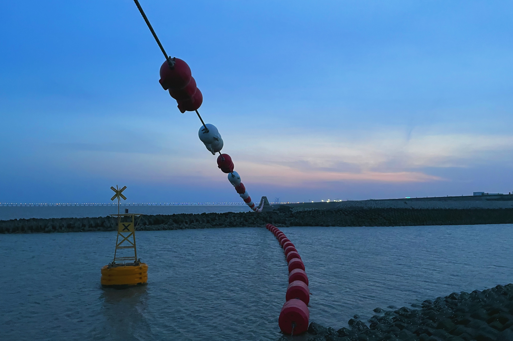
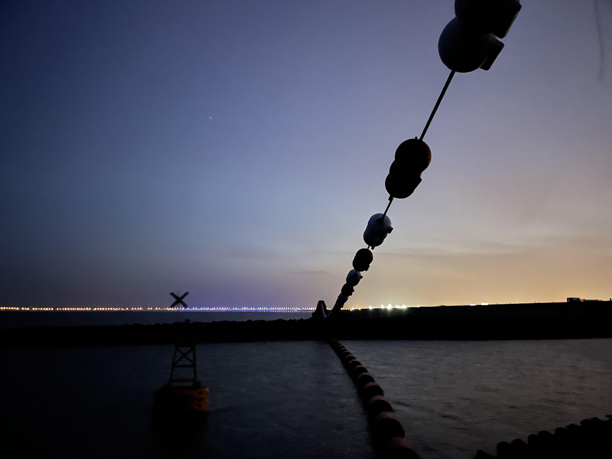
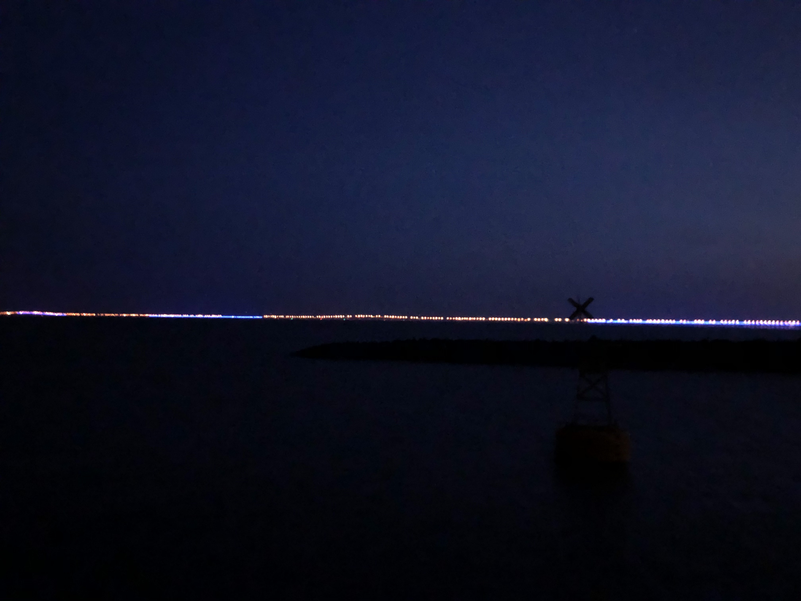
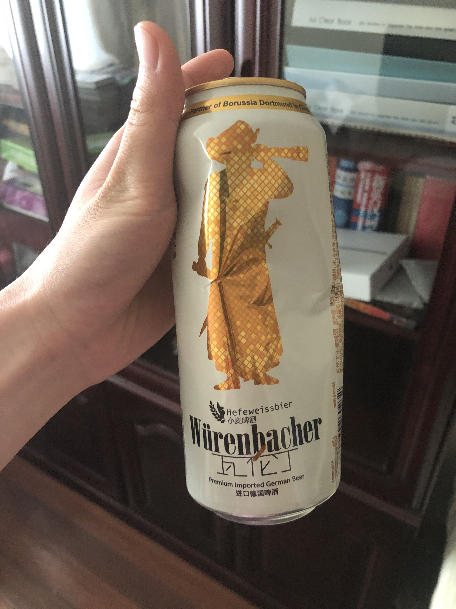
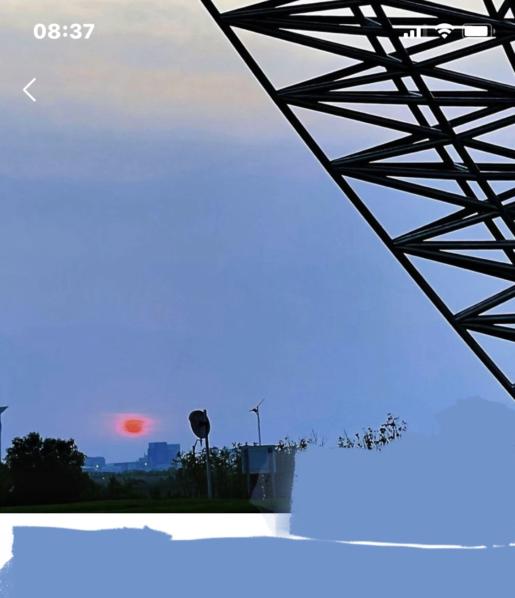

2021-07-17
石头的背后有一对情侣，男生似乎在给女生拍照，一直在逗她开心。彼时天色已经逐渐暗淡，我和她隔了一段距离，靠在那块石头上，风呼呼地穿过我们，浪哗哗地敲在岸上，我有点听不清她说话，此时的景色和那幅画一模一样。我从包里拿出三个小时前我们在超市买的瓦伦丁黑啤，她说她不嫌弃我和她共饮一瓶啤酒，我感觉自己开始被她接受。这是我第一次喝酒，虽然啤酒又苦又酸并不好喝，但是和她看海的喜悦让我早已忽略了这些——这种在日剧里才会出现的场景，竟然在我和她之间发生，这让我很难不洋洋得意。之后我们又拍了很多照片，可惜的是没有一张是我们两个的合照。东海大桥逐渐灯火通明，脚下海浪留下的印记逐渐升高，背后的情侣早已离开，这地方似乎只属于我们两个了，“这就是世界的尽头吧？”我想。“既然是世界的尽头，如果我表白失败了那应该也没人记得吧？”我又萌生了告白的念头。果然黑夜与海风让我逐渐上头，似乎海浪和海风带走我了的羞耻。我酝酿了很久没有说话，在我的畏畏缩缩中她说“要不要回家？地铁是不是要没了哇”。她的话让我彻底清醒，我意识到此时此地已经很难打到车了。我牵着她的手再一次回到了堤顶路上，四处寻找可以回家的交通工具。
然而我们用尽各种办法也找不到一辆网约车，眼看着时间越来越晚。虽然她擅长掩饰自己的负面情绪，但是她的焦虑我肉眼可见在增加——也许是因为我不靠谱，也许是因为风吹得她很冷，我一时改变不了前者，于是让她把我的防晒衣穿上。在我们走投无路的时候，一辆黑车驶来问我们要不要上车，车后还有两个看上去很不良的少年。
她看起来拿不定主意，我想这是最后的机会了，就算出了什么状况我也要保护好她，尽管我自己心里也很没底。我看到她在车上一直在和妈妈聊天，似乎很担心。好在最后发现司机只是想赚点小钱，把我们从地铁站放下后就要了30块钱。上了地铁后我能感到她焦虑的心情得到了释放，开始和我聊她去旅行的事情，聊她的妈妈，聊她最爱的小和。我对于我的表现很失望，我担心她是否也是如此，此时我只想快点回家emo。这是我为数不多的没有送她回家，我陷入了深深的自责与无助。
到家后我拿起手机看微信，她说“你带我去看海我真的超级开心的！”。我想和你说，这句话真的让我开心了好久好久好久，似乎你能看出我失落的心情一般，让我重拾信心面对你。我不敢和你说我的软弱自卑，怕你心里嘲笑。我是那么想获得你的依赖，然而最后只会在你的宽容中收场。事实是，你为了我们的关系做出了很多努力，我现在才深深地意识到了这一点，希望还为时不晚。那个晚上，我脑中充满了海浪敲打岸边的声音、夹杂着风声和啤酒罐的声音，久久无法入眠......
第二天，我发现她把朋友圈背景换成了她拍下的夕阳。
有一个人在耍帅
画的原景
天逐渐黑了
天黑了
不舍得扔
惊喜发现